Contents
clear all; close all;
Generate some bits randomly
NumberOfBits = 10 ; RandomBits = randi([0 1],1,NumberOfBits); %RandomBits = [1 0 1 0 0 1 1 0 1 1]; % test case Tb = 1; f = 0: 0.01: 5; Ts = 1; % plot orignal squence figure(1) stairs(0:NumberOfBits,[RandomBits 0],'linewidth', 2); title('Orignal Squence'); ylim([-.2 1.2]); % Intialize arrays for output waves NRZ_out = zeros(1,10); NRZI_out = zeros(1,10); RZ_out = zeros(1,20); AMI_out = zeros(1,10); Manchester_out = zeros(1,10); MLT3_out = zeros(1,10); % Modulate the signal using the specified line code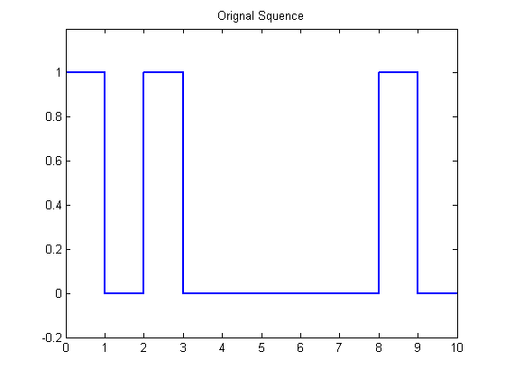
Modulate using NRZ-L line code
% expected squeunce = [1 -1 1 -1 -1 1 1 -1 1 1] signal = ones(1,NumberOfBits+1); signal(RandomBits==0) = -1; NRZ_out = signal; figure(2); subplot(3,2,1) stairs(0:NumberOfBits ,NRZ_out ,'linewidth', 2); title('NRZ-L'); ylim([-2 2]); % Calculate the power spectrum density NRZ_psd = Tb*(sinc(f*Tb)).^2; figure(3); subplot(3,2,1); plot(NRZ_psd,'linewidth', 2); title('Non-return to zero PSD');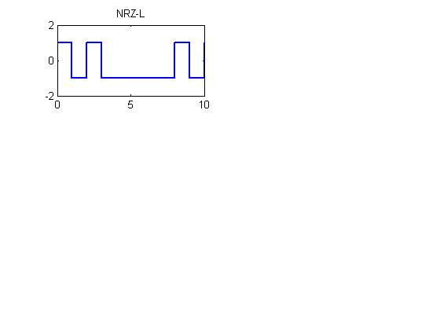 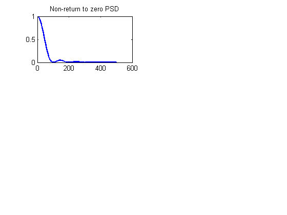
Modulate using NRZ-I line code
% expected squeunce = [1 1 -1 -1 -1 1 -1 -1 1 -1] %OneFlag is a flag used to indicate the last "One" state (positive/negative) OneFlag = 1; %Initial value from +vp signal = zeros(1,NumberOfBits+1); signal(1) = OneFlag; for index=2:length(RandomBits) if RandomBits(index)==1 OneFlag = -1* OneFlag; %Invert the "One" state signal(index) = OneFlag; elseif RandomBits(index)== 0 signal(index) = OneFlag ; end end NRZI_out = signal; figure(2); subplot(3,2,2) stairs(0:NumberOfBits, NRZI_out ,'linewidth', 2); title('NRZ-Inverted'); ylim([-2 2]); % Calculate the power spectrum density NRZI_psd = Tb*(sinc(f*Tb)).^2; figure(3); subplot(3,2,2); plot(NRZI_psd ,'linewidth', 2); title('Non-return to zero inverted');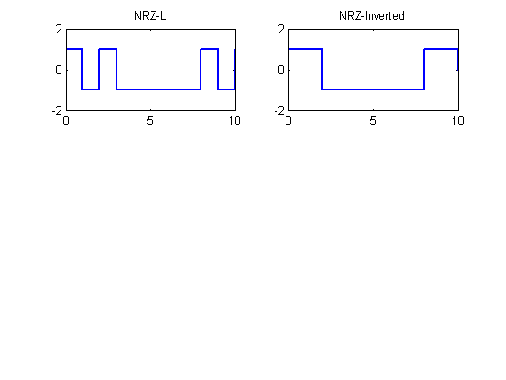 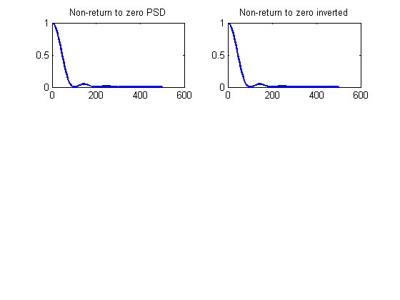
Modulate using RZ line code
% expected squeunce = [1 -1 1 -1 -1 1 1 -1 1 1] each 50% of cycle signal = zeros(1,2*NumberOfBits+1); for i = 1 :2: 2*NumberOfBits if RandomBits((i+1)/2) == 1 signal(i) = 1; signal(i+1) = 0; else signal(i) = -1; signal(i+1) = 0; end end RZ_out = signal; figure(2); subplot(3,2,3) stairs(0:0.5:NumberOfBits, RZ_out ,'linewidth', 2); title('RZ'); ylim([-2 2]); % Calculate the power spectrum density RZ_psd=Tb/4*(sinc(f*Tb/2)).^2; figure(3); subplot(3,2,3); plot(RZ_psd,'linewidth', 2); title('Return to zero');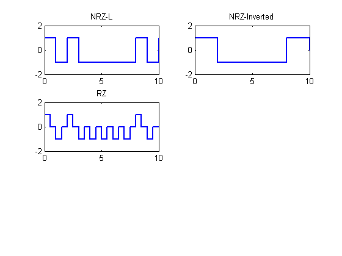 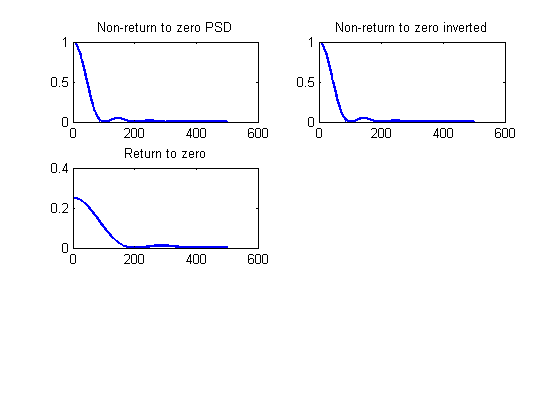
Modulate using Alternative mark inversion (AMI)
expected squeunce = [1 0 -1 0 0 1 -1 0 1 -1]
OneFlag = 1; % Initial value from +vp signal = ones(1,NumberOfBits+1); for index=1:length(RandomBits) if RandomBits(index)== 1 signal(index) = OneFlag; OneFlag = -1*OneFlag; % Invert the "One" state elseif RandomBits(index)== 0 signal(index) = 0 ; end end AMI_out = signal; figure(2); subplot(3,2,4) stairs(0:NumberOfBits, AMI_out ,'linewidth', 2); title('AMI'); ylim([-2 2]); % Calculate the power spectrum density AMI_psd=Tb/4*(sinc(pi*f*Tb/2)).^2.*(sin(pi*f*Tb)).^2; figure(3); subplot(3,2,4); plot(AMI_psd,'linewidth', 2); title('Alternate mark inversion');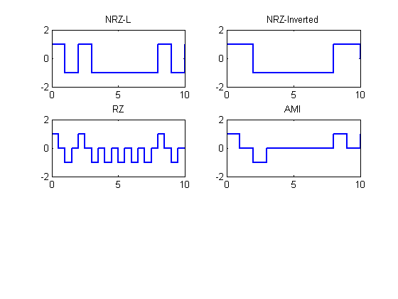 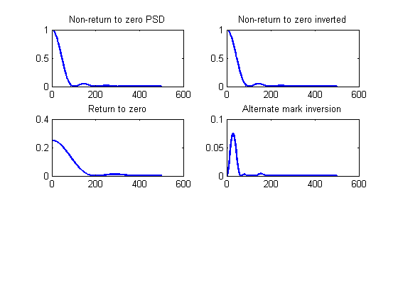
Modulate using Manchester line code
RandomBits = [ 1 0 1 0 0 1 1 0 1 1]; expected squeunce = [(1 -1) (-1 1) (1 -1) (-1 1) (-1 1)(1 -1)(1 -1)(-1 1)(1 -1)(1 -1)]
signal = zeros(1,2*NumberOfBits+1); for i = 1 :2: 2*NumberOfBits if RandomBits((i+1)/2) == 1 signal(i) = 1; signal(i+1) = -1; else signal(i) = -1; signal(i+1) = 1; end end Manchester_out = signal; figure(2); subplot(3,2,5) stairs(0:0.5:NumberOfBits, Manchester_out ,'linewidth', 2); title('Manchester'); ylim([-2 2]); % Calculate the power spectrum density Manchester_psd=Tb*(sinc(f*Tb/2)).^2.*(sin(pi*f*Tb/2)).^2; figure(3); subplot(3,2,5); plot(Manchester_psd,'linewidth', 2); title('Manchester coding');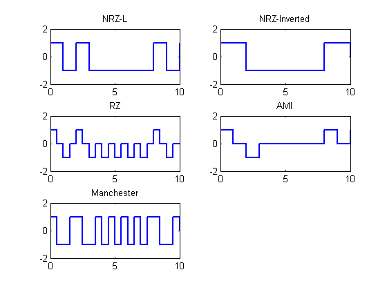 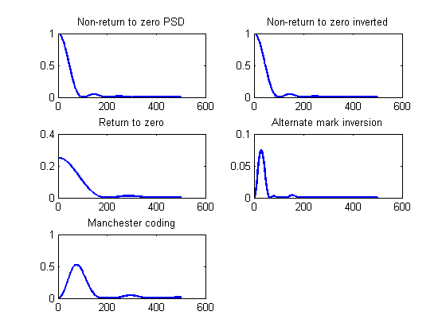
Modulate using Multi-level transmission 3
%RandomBits = [1 0 1 0 0 1 1 0 1 1]; % expected squeunce = [1 1 0 0 0 -1 0 0 1 0] signal = ones(1,NumberOfBits+1); Level = [1 0 -1 0]; i = 1; for index=1:length(RandomBits) if RandomBits(index)==1 signal(index)= Level(i); if (i < 4) i = i+1; else i = 1; end elseif RandomBits(index)==0 if index == 1 signal(index)= 0; else signal(index)= signal(index - 1); end end end MLT3_out = signal; figure(2); subplot(3,2,6) stairs(0:NumberOfBits, MLT3_out ,'linewidth', 2); title('MLT-3'); ylim([-2 2]); % Calculate the power spectrum density MLT_psd=Tb*(sinc(f*Tb/2)).^2.*(cos(pi*f*Tb)).^2 ; figure(3); subplot(3,2,6); handle2 = plot(MLT_psd ); set(handle2,'LineWidth',2) title('Multi-level transmission');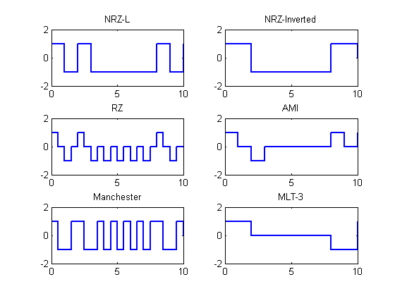 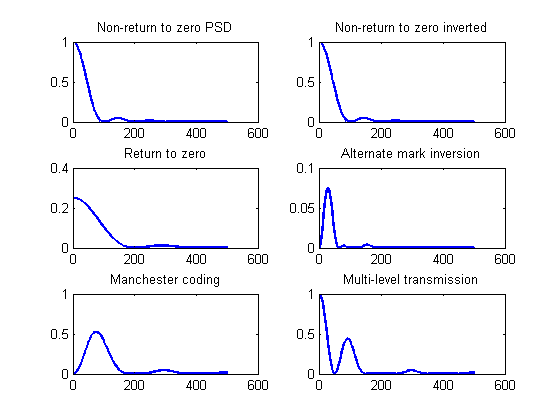